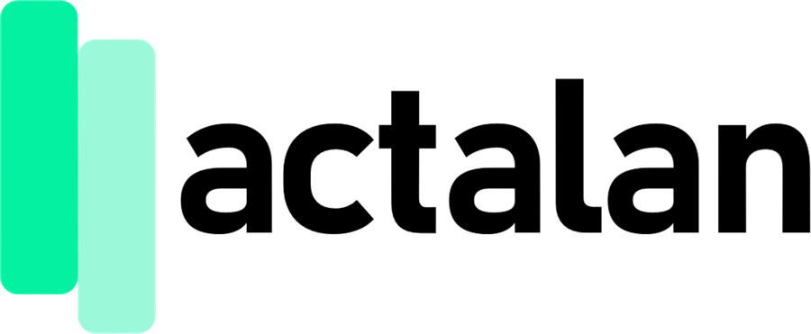

Área do consultor ↗A sua prosperidade, a nossa prioridade.
A Ognosys, membro do grupo Actalan, aconselha as empresas em dois domínios: a economia simbiótica e regenerativa e o digital responsável, incluindo a acessibilidade digital.
As nossas duas especialidades.
Especialistas ESG, um representante de rótulo AFNOR, chefes de projeto e diretores de programa.
 01
Economia simbiótica e regenerativa
Rumo a uma economia inovadora, ecológica, solidária e regenerativa: diagnóstico, acompanhamento do dirigente ou da comissão executiva, plano de ações.
AFNOR SPEC 2315Espiral simbióticaTeste de esforço do modelo de negócio
→
01
Economia simbiótica e regenerativa
Rumo a uma economia inovadora, ecológica, solidária e regenerativa: diagnóstico, acompanhamento do dirigente ou da comissão executiva, plano de ações.
AFNOR SPEC 2315Espiral simbióticaTeste de esforço do modelo de negócio
→
 02
Digital responsável
Rumo à certificação francesa «Numérique Responsable» (digital responsável), incluindo a acessibilidade digital: diagnóstico, acompanhamento do dirigente, da direção de TI ou da equipa de projeto, plano de ações.
Certificação «Numérique Responsable»Acessibilidade digital
→
02
Digital responsável
Rumo à certificação francesa «Numérique Responsable» (digital responsável), incluindo a acessibilidade digital: diagnóstico, acompanhamento do dirigente, da direção de TI ou da equipa de projeto, plano de ações.
Certificação «Numérique Responsable»Acessibilidade digital
→
A Ognosys é membro da associação Les Ateliers symbiotiques.
Um diagnóstico, um acompanhamento, um plano de ações.
A mesma abordagem para a economia simbiótica e para as certificações.
Seminários onde se trabalha, não diapositivos.
Seminários colaborativos para dirigentes e gestores, conduzidos com um parceiro especializado. Participativos, pragmáticos, orientados para resultados, adaptáveis.
Acompanhamos também.
Os nossos setores, as nossas competências.
O que já realizámos.
 Sensibilização
economia simbiótica
Gestão documental · Banca
Dar a conhecer as práticas e os princípios da economia simbiótica
Sensibilização
economia simbiótica
Gestão documental · Banca
Dar a conhecer as práticas e os princípios da economia simbiótica
 SPEC 2315
diagnóstico AFNOR
Gestão documental · Banca
Situar a maturidade do modelo de negócio face à AFNOR SPEC 2315
SPEC 2315
diagnóstico AFNOR
Gestão documental · Banca
Situar a maturidade do modelo de negócio face à AFNOR SPEC 2315
 Green IT
três módulos de curso
Escola de negócios · Ensino
Ensinar o custo oculto do digital, o Green IT e o impacto da IA
Actalan
a nossa própria política ESG
Actalan · Política ESG
Aplicar a nós mesmos o que aconselhamos
Green IT
três módulos de curso
Escola de negócios · Ensino
Ensinar o custo oculto do digital, o Green IT e o impacto da IA
Actalan
a nossa própria política ESG
Actalan · Política ESG
Aplicar a nós mesmos o que aconselhamos
Clientes anonimizados.
As mesmas exigências de método e de prova.
A Ognosys apoia-se nas equipas da Actalan: gestão de programa, dados, gestão da mudança. Um número de carbono justifica-se como um número contabilístico.
Descobrir a Actalan →Consultores, independentes ou assalariados.
Para se juntar à Ognosys ou falar de um projeto, escreva-nos.
contact@ognosys.fr →